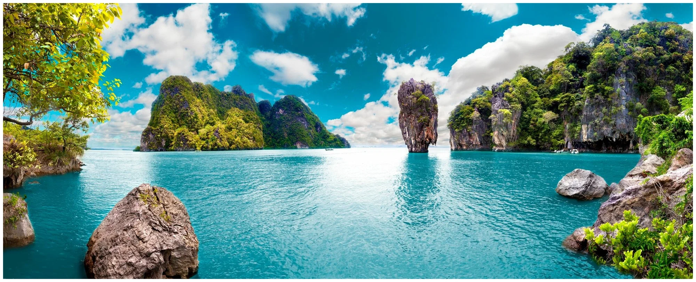

При наведении мыши на изображение будет работать фильтр blur.
При нажатой клавише Ctrl - фильтр grayscale
При нажатой клавише Alt - фильтр sepia
При нажатой клавише Shift - фильтр invert

Фильтр: blur(0px)